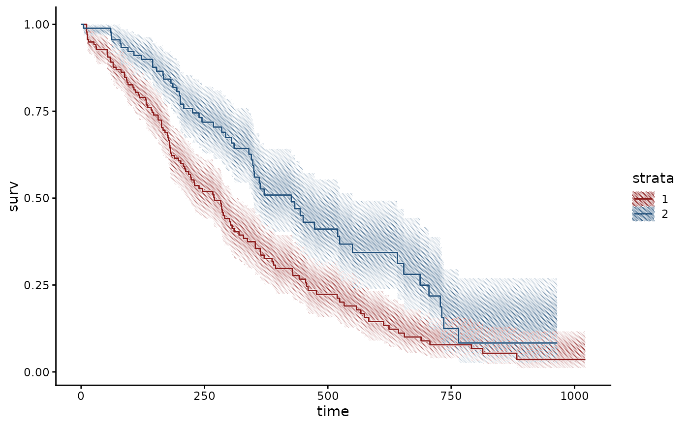

Convert a survival::survfit object into data frames for with_halftone(geom_ribbon()) and
with_halo(geom_step()). km_steps() returns the step outline with one row per corner (time, surv, lo,
hi, strata), starting at (0, 1), so that a ribbon between lo and hi follows the steps exactly.
km_censor() returns the censor marks (time, surv, strata). km_risk() returns the number at risk at
times. Strata labels are the level values without the variable name; "ph.ecog=1" becomes "1".
References
Loprinzi, C. L., Laurie, J. A., Wieand, H. S., et al. (1994). Prospective evaluation of prognostic variables from patient-completed questionnaires. North Central Cancer Treatment Group. Journal of Clinical Oncology, 12(3), 601-607. doi:10.1200/JCO.1994.12.3.601
. Distributed as survival::lung.
Examples
if (requireNamespace("survival", quietly = TRUE)) {
fit <- survival::survfit(survival::Surv(time, status) ~ sex, data = survival::lung)
s <- km_steps(fit)
ggplot2::ggplot(s, ggplot2::aes(time, group = strata)) +
with_halftone(ggplot2::geom_ribbon(ggplot2::aes(ymin = lo, ymax = hi, fill = strata))) +
with_halo(ggplot2::geom_step(ggplot2::aes(y = surv, colour = strata))) +
ggplot2::theme_classic() + theme_halftone()
}
